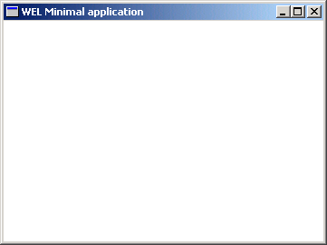

Minimal Sample

Compiling
To compile the example:
- Launch [BENCH].
- Select Use existing Ace (control file) and click OK.
- Browse to Eiffel50\examples\wel\minimal\.
- Choose Ace.ace
- Choose the directory where the project will be compiled, by default the same directory containing the Ace file.
- Click OK.
Running
After launching the program, a window will be displayed as illustrated above. There is no other functionality, but clicking on the close icon (Cross in top right hand corner), will close the window.
Under the Hood
MINIMAL_DEMO inherits WEL_APPLICATION and redefines
main_Window in order to display a WEL_FRAME_WINDOW.
This sample contains only one class:
See Also
tutorial step 1
WEL_FRAME_WINDOW